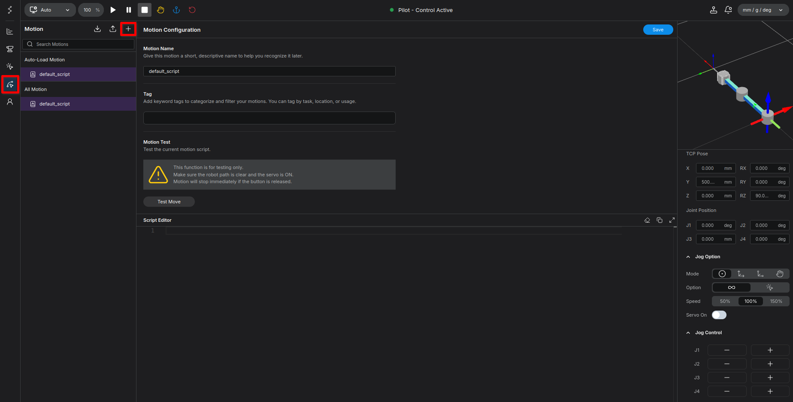
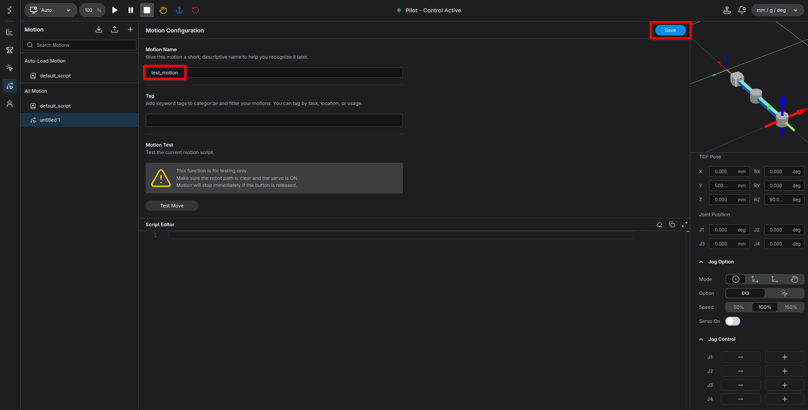
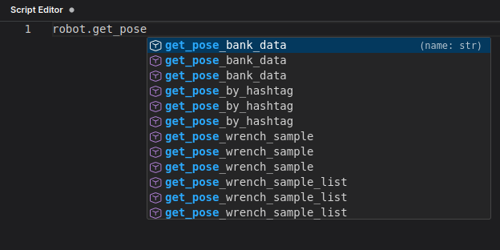
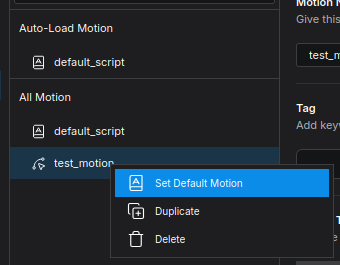
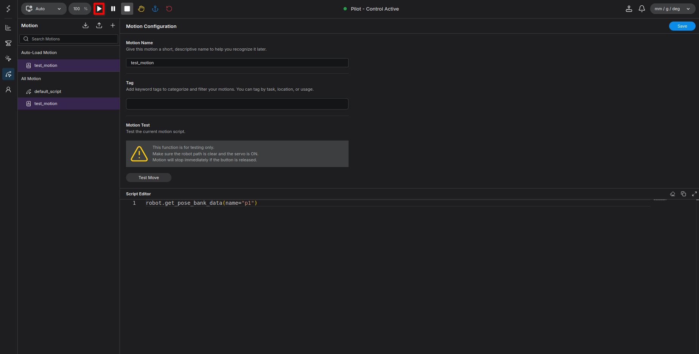
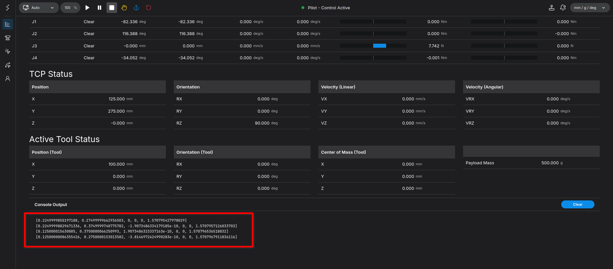
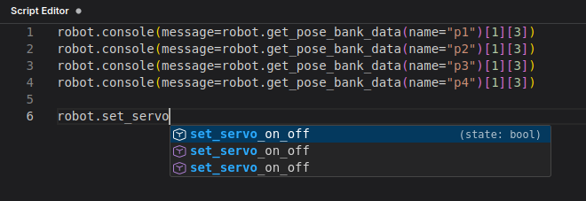

Executing Programmed Movements - Robot Programming
In this part, we will load the poses we saved in the previous section and write a Python program to move the robot through these points.
For all methods belonging to the robot object in this section, you must explicitly specify the argument names (keyword arguments). Positional arguments will not work.
Goal: Write a Python script to fetch saved poses, turn on the servo, avoid singularities, and execute precise linear and joint movements.
Setup: Creating a New Motion File
{kind=link}

- Click the Motion icon on the left side of the screen.
- Click the + button on the right side.
- A new file named
untitled 1will be created. This is where we will be writing our code from now on. - First, let's rename this file to
test_motionand click save.
{kind=link}

Step 1: Fetching and Verifying Pose Data
First, let's load the poses we saved earlier.
- In the code editor, start typing
robot.get_poseand the auto-complete list will appear. - Select or complete it to
robot.get_pose_bank_data.
{kind=link}

- Write the following code:
robot.get_pose_bank_data(name="p1")
- Click Save in the top right corner. The system will perform basic syntax checking and save your code.
Wait! Before we execute the program, let's set this script as the Default Motion.
{kind=link}

- Click the Play button to run the program. Notice that nothing happens.
{kind=link}

This is because the function was called, but we didn't print its returned value. Let's use the console function to view it. Update your code to:
robot.console(message=robot.get_pose_bank_data(name="p1")[1][3])
robot.console(message=robot.get_pose_bank_data(name="p2")[1][3])
robot.console(message=robot.get_pose_bank_data(name="p3")[1][3])
robot.console(message=robot.get_pose_bank_data(name="p4")[1][3])
Save and run. On the Home screen's Console Output, you will see the TCP pose data printed out:
{kind=link}

The data we actually need is located at index [1][3] of the returned list. This is the raw TCP pose data.
Step 2: Setting Up Target Variables
Now, let's assign these extracted poses to variables and define the velocity (vel) and acceleration (acc) for each movement.
p1 = robot.get_pose_bank_data(name="p1")[1][3]
p2 = robot.get_pose_bank_data(name="p2")[1][3]
p3 = robot.get_pose_bank_data(name="p3")[1][3]
p4 = robot.get_pose_bank_data(name="p4")[1][3]
p1_target = {'pose': p1, 'vel': 0.5, 'acc': 0.5}
p2_target = {'pose': p2, 'vel': 0.5, 'acc': 0.5}
p3_target = {'pose': p3, 'vel': 0.5, 'acc': 0.5}
p4_target = {'pose': p4, 'vel': 0.5, 'acc': 0.5}
Step 3: Servo Control and Avoiding Singularity
To move the robot via programming, we must turn the servo on, just like clicking the Servo On button in the Jog tab.
- Type
robot.set_servoand pressTabto auto-complete.
{kind=link}

- The auto-completed signature looks like
robot.set_servo_on_off(state: bool). Modify it as follows:
robot.set_servo_on_off(state=True)
sleep(1) # Adds a small delay to ensure brakes are fully released
Next, to avoid the singularity position (fully stretched arm), we will do an initial joint movement to slightly bend Joint 2 (the elbow).
home_q_target = {'q': [0, 1.57, 0, 0], 'vel': 0.3, 'acc': 0.3}
robot.move_joint(waypoints=[home_q_target])
while robot.check_finish()[1] is False:
sleep(0.1)
Step 4: Basic Linear Movements (Using Sleep)
Let's move the robot through the square using move_linear.
- Type
robot.move_land press Enter to auto-completerobot.move_linear. - The signature will look like
robot.move_linear(waypoints: list, blocking: bool, finish_mode: typing.Literal['FINE', 'ROUGH']). - Remove the extra arguments for now and use hardcoded delays (
sleep(3)) to separate the movements.
Intermediate Code:
robot.move_linear(waypoints=[p1_target])
sleep(3)
robot.move_linear(waypoints=[p2_target])
sleep(3)
robot.move_linear(waypoints=[p3_target])
sleep(3)
robot.move_linear(waypoints=[p4_target])
sleep(3)
If you save and run this, the robot will move to p1, pause for 3 seconds, move to p2, pause for 3 seconds, and so on. However, using fixed sleep() timers is an unreliable workaround. A proper program needs to verify that the robot has actually reached its target.
Step 5: Advanced Logic using check_finish()
To properly check if the robot has arrived, we use robot.check_finish().
If you auto-complete it, you get robot.check_finish(finish_mode: typing.Literal['FINE', 'ROUGH']). Leaving it empty defaults to finish_mode='FINE'.
- FINE mode: Checks that the planned trajectory has finished and verifies that the actual joint encoder values are within a specific threshold of the target.
When the robot reaches the target, the boolean at index [1] becomes True.
Updated Reliable Code:
Replace the sleep(3) lines with while loops that wait until the movement is finished:
robot.move_linear(waypoints=[p1_target])
while robot.check_finish()[1] is False:
sleep(0.1)
robot.move_linear(waypoints=[p2_target])
while robot.check_finish()[1] is False:
sleep(0.1)
robot.move_linear(waypoints=[p3_target])
while robot.check_finish()[1] is False:
sleep(0.1)
robot.move_linear(waypoints=[p4_target])
while robot.check_finish()[1] is False:
sleep(0.1)
Step 6: Continuous Movement (Combining Waypoints)
Instead of sending distinct commands for each point, you can bundle them into a single command for a smooth, continuous trajectory.
Final Refined Code:
p1 = robot.get_pose_bank_data(name="p1")[1][3]
p2 = robot.get_pose_bank_data(name="p2")[1][3]
p3 = robot.get_pose_bank_data(name="p3")[1][3]
p4 = robot.get_pose_bank_data(name="p4")[1][3]
p1_target = {'pose': p1, 'vel': 0.5, 'acc': 0.5}
p2_target = {'pose': p2, 'vel': 0.5, 'acc': 0.5}
p3_target = {'pose': p3, 'vel': 0.5, 'acc': 0.5}
p4_target = {'pose': p4, 'vel': 0.5, 'acc': 0.5}
home_q_target = {'q': [0, 1.57, 0, 0], 'vel': 0.3, 'acc': 0.3}
robot.set_servo_on_off(state=True)
sleep(1)
robot.move_joint(waypoints=[home_q_target])
while robot.check_finish()[1] is False:
sleep(0.1)
robot.move_linear(waypoints=[p1_target, p2_target, p3_target, p4_target])
while robot.check_finish()[1] is False:
sleep(0.1)
Pro Tip: When executing multiple waypoints in a single move_linear command, you may notice slight circular blending (arc interpolation) as the robot passes through the corners. If you want sharp, complete stops at every point instead, you can specify a radius of 0 in your target definitions.
Step 7: Executing Joint Movements (Using move_joint)
In the previous steps, we used move_linear to move the TCP in a perfectly straight line between points. However, you can also move the robot by directly driving its specific joint angles to their saved states. This is done using the move_joint command.
When we fetched the Cartesian pose data earlier, we used index [1][3] ([x, y, z, rx, ry, rz]). To get the raw joint angles ([q1, q2, q3, q4, ...]), we simply change the index to [1][4].
Concept: While move_linear forces the tool tip to travel in a straight line, move_joint calculates the most efficient way for the individual motors to reach their target angles. This often results in a slightly curved, sweeping motion in 3D space, which is typically faster and smoother for the mechanical joints.
Fetching Joint Data and Setting Targets
Let's extract the joint angles and set up new target dictionaries. Notice that we use the key 'q' instead of 'pose':
# Fetching raw joint angles (index [1][4]) instead of Cartesian poses
q1 = robot.get_pose_bank_data(name="p1")[1][4]
q2 = robot.get_pose_bank_data(name="p2")[1][4]
q3 = robot.get_pose_bank_data(name="p3")[1][4]
q4 = robot.get_pose_bank_data(name="p4")[1][4]
# Defining the targets using the 'q' key
q1_target = {'q': q1, 'vel': 0.5, 'acc': 0.5}
q2_target = {'q': q2, 'vel': 0.5, 'acc': 0.5}
q3_target = {'q': q3, 'vel': 0.5, 'acc': 0.5}
q4_target = {'q': q4, 'vel': 0.5, 'acc': 0.5}
Executing the Sequence
Just like with move_linear, you can execute these targets sequentially and use check_finish() to ensure the robot has successfully reached each point before issuing the next command:
robot.move_joint(waypoints=[q1_target])
while robot.check_finish()[1] is False:
sleep(0.1)
robot.move_joint(waypoints=[q2_target])
while robot.check_finish()[1] is False:
sleep(0.1)
robot.move_joint(waypoints=[q3_target])
while robot.check_finish()[1] is False:
sleep(0.1)
robot.move_joint(waypoints=[q4_target])
while robot.check_finish()[1] is False:
sleep(0.1)
Pro Tip: Exactly like our continuous linear movements, you can also bundle these joint targets into a single command for a smooth, uninterrupted trajectory:
robot.move_joint(waypoints=[q1_target, q2_target, q3_target, q4_target])
Summary
Congratulations! You have successfully:
- Created and saved a new motion script.
- Retrieved saved Cartesian and Joint poses directly via Python code.
- Programmatically controlled the servo state and handled singularities.
- Mastered the logic for executing linear sequences (
move_linear). - Learned the difference between arbitrary delays (
sleep) and robust state-checking (check_finish). - Understood how to execute sweeping, motor-efficient movements using raw joint angles (
move_joint).